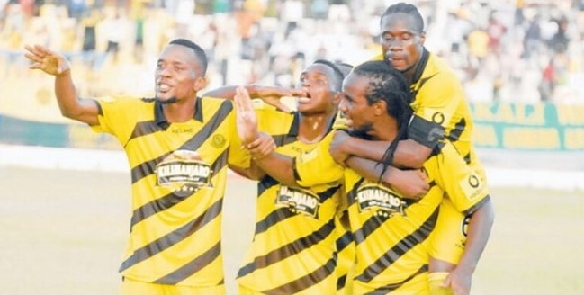
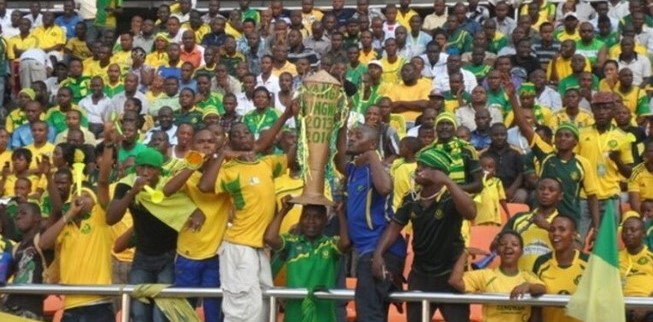
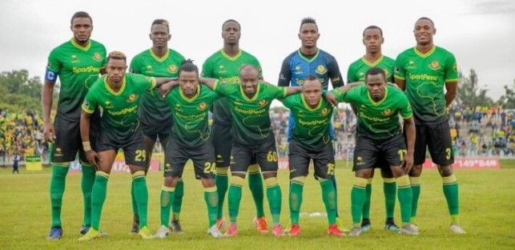
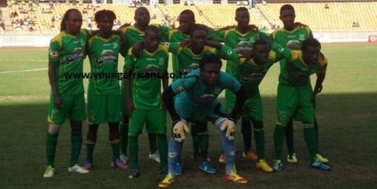

Young Africans Sports Club
OUR HISTORY
Young African FC and sports club
Young African FC, popularly known as "Yanga" or "Timu ya wanainchi". This FC is one of the top football clubs based in Jangwani Dar es Salaam, Tanzania. This club was founded in 1935 as a community club but has since grown to become one of the biggest football clubs not only in Tanzania but across East and Central Africa. In fact, young Africans FC is the most successful team in Tanzania. This FC has a total of 27 league titles and 4 domestic cups.

This club has also participated in the CAF Champions league edition multiple times and has performed relatively well. Furthermore, young African FC has also participated in the Council for East and Central Football Association (CECAFA). A football tournament played by East Africa and a bit of Central Africa nations. And won five times, making it one of the most successful football teams in East Africa. You can read about the best football players in the world from other football clubs.
Young African sports club history
People can trace young African FC roots as early as 1910. Like many other football clubs in Africa, the Young Africans sports club started humbly as a community football club in Jangwani Dar es Salaam. Over the years, the club's popularity grew. It was officially recognized and registered in 1935. When the local community who were categorized as Africans by the British colonial administration decided to officially create a club that will compete with non-Africans football clubs in a well-structured league. The name was given to this football club when the club officially started. It was New Young. But it was later changed to Dar es Salaam Young African SC and finally to the Young African sports club.

Just two years after the club was officially established, things did not go well for the club. The club recorded a poor performance and widespread dissatisfaction among team members and club supporters. That resulted in some of the club members splitting and forming a rival team known as Queens Football Club, popularly known as samba. Since then, these two football teams, Yanga, and Simba have been fierce rivals.
Young African FC and sports club success

As stated earlier, the Young African sports club is the most decorated team of all time in Tanzania. This football club won its first premier league title in 1968. And later went on to win 5 consecutive league titles before losing it to Simba FC, which dominated the league from 1976 to 1980. The young African sports club has also won 3 premier titles in three consecutive seasons in 201 5, 201 6, and 2017. And they back-to-back wins on three different occasions. In total, this football club has won 27 premier league titles and 4 domestic cups. However, the team has not recorded good performance over the recent past and has not a league title since 2017. On the other hand, their rival club Simba has dominated the league since 2017. And this club has won 4 league titles consecutively. The club has also recorded huge success in the regional competition. It having won the senior CECAFA cup 5 times and has participated in multiple CAF Champions league editions. The football club has also qualified on this year's CAF Champions league edition. And it is currently past the group stage.
consultancy deal with one of the most-watched leagues in the world, La Liga. Earlier this year, this giant club also agreed to change its ruling structure in order to allow private investment from other companies. This move set to free the club from the financial crisis that has faced over the years. Young African sports club recent form

Young Africans SC in premier league
The young African football club has not won the converted premier league title over the last four years. The league has been dominated by the fierce rival Simba FC, which seems to be getting even stronger by the season. However, Young African sports club manager Mr. Nasreddine Nabi has vowed that the club will lift the premier league trophy next season, which is about to commence soon. The manager admitted that their fans have not been impressed with the fact that the club has not won the premier league title over the last four seasons and has promised to bring the Jangwani giants back to where they belong.
And from the steps that the club has taken, including buying new talented players and bringing new coach, and changing their tactical staff, it seems that the sleeping giant is serious to go back to their former glory. Whether Young African FC will win the premier league title or not is a game of wait and see. However, the head coach is confident that the team and the technical staff have all learned their mistakes the hard way and are convinced that the changes made over the recent time will yield fruits this coming season.
"Young Africans SC was in a transition period. And we are satisfied with what we have done since I took over will yield fruits. Our fan will be happy next season because we are taking our crown back." Mr. Nasreddine Nabi said while speaking to the media.
According to the draw conducted on Friday at CAF headquarters in curio, young African FC (official site) is set to return to the continental scene with a class with Nigeria's Rivers United. On the other hand, young Africans SC that is making a comeback to this elite competition after finishing second in the league have their eyes set on the prize and is to win the title from the defending champions, Al Ahly of Egypt. If they continue performing well in this competition, then they may clash with their arch-rival Simba at some point.